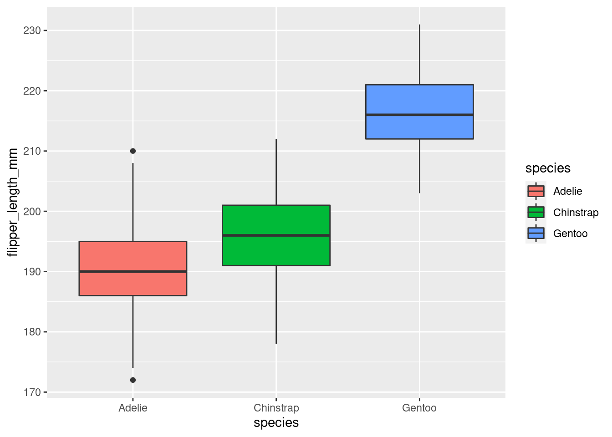
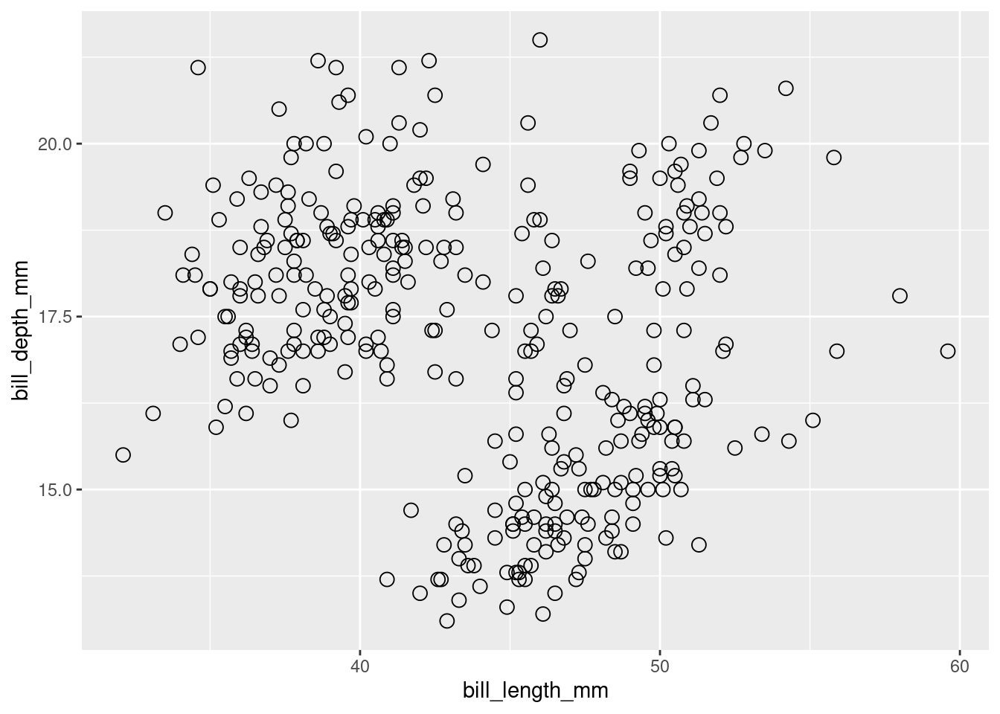

Capítulo 15 Visualização de dados geográficos
15.1 Dados geográficos no R
Nesta seção, iremos fazer uma breve introdução aos principais conceitos sobre dados geográficos: 1. os principais formatos (vetor e raster); 2. como importar, manipular e exportar; 3. escalas de representação dos dados; 4. sistemas de referências de coordenadas e unidades. Também iremos fazer algumas operações espaciais direcionadas à preparação de dados para compor variáveis preditoras (e.g. temperatura, precipitação e altitude) e como resumir informações sobre a biodiverisdade para unidades espaciais (e.g. buffers, quadrículas e hexágonos). Por fim, finalizaremos esse capítulo com a criação de mapas, ressaltando seus principais elementos: títutlo, mapa principal, mapa secundário, legenda, coordenadas do gride, orientação (compasso), barra de escala e fontes.
Esse capítulo segue parte da estrutura organizada por Lovelace, Nowosad & Muenchow (2019), principalmente os capítulos 2 a 8, sendo adaptado para atender aos principais requisitos que julgamos inerentes à estudos ecológicos. Entretanto, foi impossível cobrir todos os assuntos acerca do geoprocessamento, sendo um assunto muito extenso, que requer a leitura de livros especializados na área. Outros livros podem ser consultados no capítulo 11 11 Geospatial do Big Book of R.
Todas as operações serão realizadas através da linguagem R, utilizando os pacotes: sf (Pebesma 2018) para dados vetoriais, raster (Hijmans 2020) para dados raster, spData (Bivand et al. 2020), rnaturalearth (South 2017) e geobr (Pereira & Goncalves 2020) para baixar dados vetoriais, e ggplot2 (Wickham 2016), ggspatial (Dunnington 2020), tmap (Tennekes 2018) e viridis (Garnier 2018) para a composição de mapas.
Dessa forma, garanta que esses pacotes estejam instalados:
install.packages(c("sf",
"raster",
"rgdal",
"spData",
"rnaturalearth",
"geobr",
"ggplot2",
"ggspatial",
"tmap",
"viridis"),
dep = TRUE)IMPORTANTE: Se você estiver utilizando MacOS ou Linux, a instalação dos pacotes listados acima pode não funcionar. Esses sistemas operacionais possuem “requisitos específicos do sistema” que são geralmente descritos no
README.mddos pacotes no GitHub. Entretanto, há várias instruções específicas que podem ser encontradas on-line.
15.2 Vetor
Dados vetoriais representam informações geográficas acuradas através de pontos, linhas e polígonos (Figura 14.1). Cada uma dessas geometrias são indicadas para representar feições e/ou eventos específicos, como veremos adiante.

Figure 15.1: Ilustração das geometrias de ponto, linha e polígono genéricos. Adaptado de: Lovelace, Nowosad & Muenchow (2019).
15.2.1 Pontos
Pontos são geometrias geralmente utilizados para representar eventos pontuias unitários, como ocorrência de espécies, locais de coleta, pontos de GPS ou nascentes de rios. Esses dados são representados por um único vértice, ou seja, um par de coordenadas (longitude - X e latitude - Y), que são plotados na forma de cículos ou outro elemento que represente o evento em questão. Dessa forma, geralmente utilizamos dados tabulares com pelo menos duas colunas contendo essas coordenadas. Além disso, esses dados tabulares podem conter outras colunas com informações quantitativas ou qualitativas como número de espécies, temperatura, precipitação ou ainda categorias como tipo de habitat, que podemos representar nos pontos através de diferentes formatos, tamanhos ou cores desses pontos (Figura 14.2).
| id | longitude | latitude | numero_especies | temperatura | precipitacao | habitat |
|---|---|---|---|---|---|---|
| 1 | 0 | 2 | 2 | 20 | 1000 | floresta |
| 2 | 1 | 5 | 3 | 22 | 1100 | pastagem |
| 3 | 2 | 3 | 3 | 28 | 1300 | floresta |
| 4 | 5 | 4 | 2 | 23 | 1200 | floresta |
| 5 | 5 | 1 | 5 | 25 | 1450 | pastagem |

Figure 15.2: Geometrias de pontos e suas identificações com a tabela de dados.
15.2.2 Linhas
Linhas representam geometrias lineares como estradas, rios, trajetos, divisões ou distâncias. Geralmente as linhas são criadas em softwares de Sistema de Informações Geográficas (SIG) como o QGIS e depois importadas para o R. As linhas são representadas por no mínimo dois vértices conectados, i.e., dois pares de coordenadas, gerando uma geometria aberta, possuindo como característica o comprimento. Da mesma forma que os pontos, as linhas podem ter informações tabulares, sendo quantitativas como comprimento dessa feição de linha, ou ainda informações qualitativas como o nome de estradas ou vazão dos rios, que podem ser utilizadas para alterar o formato, tamanho ou cor dessas linhas (Figura 14.3).
| id | rodovias | comprimento_km |
|---|---|---|
| 1 | rodovia_01 | 12 |
| 2 | rodovia_02 | 52 |
| 3 | rodovia_03 | 5 |
| 4 | rodovia_04 | 38 |
| 5 | rodovia_05 | 18 |

Figure 15.3: Geometrias de linhas e suas identificações com a tabela de dados.
15.2.3 Polígonos
Por fim, polígonos representam geometrias fechadas, como fragmentos de vegetação, lagos ou limites geográficos, sendo mais voltado para representar feições de um mapa de uso e cobertura da terra ou limites geográficos naturais, políticos, administrativos ou regulares. Os polígonos também são criados geralmente em softwares específicos de SIG e depois importados para o R, ou podemos usar funções para criar buffers ou malhas de quadrículas ou hexágonos. Os polígonos são representados por no mínimo três vértices conectados, sendo que o primeiro vértice possui coordenadas idênticas ao último, de modo que essa ligação gere uma feição fechada, com características como perímetro e/ou área. Da mesma forma que os pontos e linhas, colunas podem ser associadas aos polígonos para representar informações quantitativas como perímetro e área dessa polígono, ou ainda, informações qualitativas como a classe de cobertura da terra, que podem ser utilizadas para alterar formatos, tamanho ou cores desses polígonos (Figura 14.3).
| id | uso | area_ha | perimeto_m |
|---|---|---|---|
| 1 | floresta | 50 | 700 |
| 2 | urbano | 22 | 300 |
| 3 | pastagem | 30 | 250 |
| 4 | agua | 25 | 400 |
| 5 | cerrado | 40 | 500 |

Figure 15.4: Geometrias de polígonos e suas identificações com a tabela de dados.
Além disso, geralmente utilizamos polígono regulares (buffers, quadrículas ou hexágonos) para resumir informações de biodiversidade ou de variáveis preditoras, que podem ser utilizadas como unidades amostrais em análises espaciais ou estatísticas, principalmente nas áreas de Ecologia Espacial, Ecologia da Paisagem, Biogeografia ou Macroecologia (Figura 14.4).
| id | numero_especies | temperatura | precipitacao |
|---|---|---|---|
| 1 | 2 | 20 | 1000 |
| 2 | 3 | 22 | 1100 |
| 3 | 3 | 28 | 1300 |
| 4 | 2 | 23 | 1200 |
| 5 | 5 | 25 | 1450 |
| … | … | … | … |

Figure 15.5: Polígonos regulares: buffers, quadrículas e hexágonos.
15.2.4 Tabela de atributos
Para os dados vetoriais é necessário ainda destacar um elemento fundamental: a tabela de atributos. A tabela de atributos é uma tabela que inclui dados geográficos e dados alfanuméricos. Os dados geográficos são representados por cada feição geolocalizada espacialmente (ponto, linha ou polígono), e os dados alfanuméricos são todos os demais dados associados à cada uma dessas feições, representado na forma de colunas (Figuras 14.2, 14.3, 14.4 e 14.5).
Dessa forma, a tabela de atributos reúne informações sobre cada feição e pode ser utilizada para a realização de filtros ou agregações dos dados de cada feição. É nessa tabela que podemos ainda concatenar novas informações (colunas) de operações com as feições (linhas) como cálculo de comprimento, perímetro, área ou ainda outras operações com as colunas. Também podemos associar outros dados não espaciais aos dados da tabela de atributos com a junção por uma coluna identificadora.
15.2.5 sf: principal pacote no R para dados vetoriais
Atualmente o principal pacote para trabalhar com dados vetoriais é o sf, que implementou o Simple Feature no R (Pebesma 2018). Entretanto, outro pacote pode ser tão versátil quanto o sf, no caso o terra.
Esse pacote facilitou muito a forma de trabalho de vetores no R, sendo que as principais vantagens são (Lovelace, Nowosad & Muenchow 2019):
- rápida leitura e gravação de dados
- aprimorado desempenho de plotagem
- objetos
sfpodem ser tratados como data frames na maioria das operações - funções
sfpodem ser combinadas usando o operador%>%e funcionam no formato tidyverse - funções
sfsão consistentes e intuitivas (sempre começam com prefixost_)
Os tipos de geometrias apresentadas são representadas por diferentes classes: POINT, LINESTRING e POLYGON para apenas uma feição de cada tipo de geometria; MULTIPOINT, MULTILINESTRING e MULTIPOLYGON para várias feições de cada tipo de geometria e; GEOMETRYCOLLECTION para várias feições e tipos de geometrias (Figura 15.6).

Figure 15.6: Tipos de classes suportadas pelo sf. Fonte: Lovelace, Nowosad & Muenchow (2019).
O pacote sf define um sistema de classes hierárquicas, com três classes (Tabela 15.1):
- Classe
sfg- uma geometria única - Classe
sfc- uma coluna de geometria, que é um conjunto de geometriassfg+ informações CRS - Classe
sf- uma camada, que é uma coluna de geometriasfcdentro de umdata.framecom atributos não espaciais
| Classes | Hierarquia | Informação |
|---|---|---|
sfg |
Geometria | Tipo e coordenadas |
sfc |
Coluna de geometria | Conjundo de sfg + CRS |
sf |
Camada | sfc + atributos |
Ao olharmos as informações de um objeto da classe sf podemos notar diversas informações que descrevem o mesmo:
- resumo do vetor: indica o número de feições (linhas) e campos (colunas)
- tipo da geometria: umas das sete classes listadas anteriormente
- dimensão: número de dimensões, geralmente duas (XY)
- bbox (bordas): coordenadas mínimas e máximas da longitude e latitude
- informação do CRS: epsg (SRID) ou proj4string indicando o Sistema de Referência de Coordenadas
- tibble: tabela de atributos, com destaque para a coluna
geomque representa cada feição ou geometria
library(spData)
data(world)
world## Simple feature collection with 177 features and 10 fields
## geometry type: MULTIPOLYGON
## dimension: XY
## bbox: xmin: -180 ymin: -90 xmax: 180 ymax: 83.64513
## geographic CRS: WGS 84
## # A tibble: 177 x 11
## iso_a2 name_long continent region_un subregion type area_km2 pop lifeExp
## <chr> <chr> <chr> <chr> <chr> <chr> <dbl> <dbl> <dbl>
## 1 FJ Fiji Oceania Oceania Melanesia Sove… 1.93e4 8.86e5 70.0
## 2 TZ Tanzania Africa Africa Eastern … Sove… 9.33e5 5.22e7 64.2
## 3 EH Western … Africa Africa Northern… Inde… 9.63e4 NA NA
## 4 CA Canada North Am… Americas Northern… Sove… 1.00e7 3.55e7 82.0
## 5 US United S… North Am… Americas Northern… Coun… 9.51e6 3.19e8 78.8
## 6 KZ Kazakhst… Asia Asia Central … Sove… 2.73e6 1.73e7 71.6
## 7 UZ Uzbekist… Asia Asia Central … Sove… 4.61e5 3.08e7 71.0
## 8 PG Papua Ne… Oceania Oceania Melanesia Sove… 4.65e5 7.76e6 65.2
## 9 ID Indonesia Asia Asia South-Ea… Sove… 1.82e6 2.55e8 68.9
## 10 AR Argentina South Am… Americas South Am… Sove… 2.78e6 4.30e7 76.3
## # … with 167 more rows, and 2 more variables: gdpPercap <dbl>,
## # geom <MULTIPOLYGON [°]>Podemos fazer um mapa simples utilizando a função plot() desse objeto. Para facilitar, escolheremos apenas a coluna geom, que contém a geometria.
IMPORTANTE: faremos mapas mais elaborados na seção xx desse capítulo.
plot(world$geom, col = viridis::viridis(10), main = "Mapa do mundo")
Figure 15.7: Mapa vetorial do mundo.
15.3 Raster
Os dados no formato raster consistem em uma matriz (com linhas e colunas) representando células igualmente espaçadas (pixels; Figura 14.7). Esse formato de dado torna a álgebra e o processamento de mapas muito mais eficiente e rápido do que o processamento de dados vetoriais. As células dos dados raster possuem duas informações: 1. a identificação das células (IDs das células) para especificar sua posição na matriz (Figura 14.8 A) e; 2. os valores das células (Figura 14.8 B), que geralmente são coloridos para facilitar a interpretação da variação dos valores no espaço (Figura 14.8 C). Além disso, valores ausentes ou não amostrados são representados por NA, ou seja, not available (Figura 14.8 B e C).
Figure 15.8: Raster: (A) IDs das células, (B) valores das células, (C) células coloridas. Adaptado de: Lovelace, Nowosad & Muenchow (2019).
15.3.1 Raster contínuo e categórico
A célula ou pixel de um raster pode conter apenas um único valor, que pode ser contínuo ou categórico (Figura 14.9). O formato raster geralmente representa fenômenos contínuos, como elevação, precipitação, temperatura, ou dados espectrais de imagens de satélite, mas também pode representar categorias como tipos de florestas ou cobertura da terra (Figura 14.8).

Figure 15.9: Raster: (A) mapa contínuo, (B) mapa categórico. Adaptado de: Lovelace, Nowosad & Muenchow (2019).
15.3.2 raster: principal pacote no R para dados raster
Atualmente, o principal pacote para trabalhar com dados raster é o raster (Hijmans 2020), apesar de existir outros dois em desenvolvimento e já sendo aplicados, como o terra e o star. Ele fornece uma ampla gama de funções para criar, ler, exportar, manipular e processar dados raster no R. Os rasters dentro do R podem ser de três classes: RasterLayer, RasterStack e RasterBrick.
A classe RasterLayer representa apenas uma camada raster. Para criar um raster no R podemos utilizar a função raster(). Observando essa classe, podemos notar as seguintes informações:
- class: classe raster do objeto
- dimensions: número de linhas, colunas e células
- resolution: largura e altura da célula
- extent: coordenadas mínimas e máximas da longitude e latitude
- crs: Sistema de Referência de Coordenadas
- source: fonte dos dados (memória ou disco)
- names: nome das camadas
- values: valores máximos e mínimos das células
library(raster)
raster_layer <- raster::raster(nrows = 5, ncols = 5,
res = .5,
xmn = -61.5, xmx = -59, ymn = -14.5, ymx = -12,
vals = sample(1:25, 25, rep = TRUE))
raster_layer## class : RasterLayer
## dimensions : 5, 5, 25 (nrow, ncol, ncell)
## resolution : 0.5, 0.5 (x, y)
## extent : -61.5, -59, -14.5, -12 (xmin, xmax, ymin, ymax)
## crs : +proj=longlat +datum=WGS84 +no_defs
## source : memory
## names : layer
## values : 1, 24 (min, max)Um mapa simples do raster pode ser obtido utilizando a função plot(), do próprio pacote raster.
raster::plot(raster_layer, col = viridis::viridis(n = 25))Figure 15.10: Mapa simples de um RasterLayer.
Além da classe RasterLayer, há mais duas classes que trabalham com várias camadas: RasterBrick e RasterStack. Elas diferem em relação ao número de formatos de arquivo suportados, tipo de representação interna e velocidade de processamento.
A classe RasterBrick geralmente corresponde a importação de um único arquivo de imagem de satélite multiespectral ou a um único objeto de várias camadas na memória. A função brick() cria um objeto RasterBrick.
raster_layer1 <- raster_layer
raster_layer2 <- raster_layer * raster_layer
raster_layer3 <- sqrt(raster_layer)
raster_layer4 <- log10(raster_layer)
raster_brick <- raster::brick(raster_layer1, raster_layer2, raster_layer3, raster_layer4)
raster_brick## class : RasterBrick
## dimensions : 5, 5, 25, 4 (nrow, ncol, ncell, nlayers)
## resolution : 0.5, 0.5 (x, y)
## extent : -61.5, -59, -14.5, -12 (xmin, xmax, ymin, ymax)
## crs : +proj=longlat +datum=WGS84 +no_defs
## source : memory
## names : layer.1, layer.2, layer.3, layer.4
## min values : 1, 1, 1, 0
## max values : 24.000000, 576.000000, 4.898979, 1.380211Ao utilizarmos a função plot() do pacote raster, podemos visualizar todos os raster contidos no objeto RasterBrick.
raster::plot(raster_brick, col = viridis::viridis(n = 25))
Figure 15.11: Mapa simples de um raster RasterBrick.
Já a classe RasterStack permite conectar vários objetos raster armazenados em arquivos diferentes ou vários objetos na memória. Um RasterStack é uma lista de objetos RasterLayer com a mesma extensão e resolução. Uma maneira de criá-lo é com a junção de vários objetos espaciais já existentes no ambiente global do R ou listar vários arquivos raster em um diretório armazenado no disco. A função stack() cria um objeto RasterStack.
Outra diferença é que o tempo de processamento para objetos RasterBrick geralmente é menor do que para objetos RasterStack. A decisão sobre qual classe Raster* deve ser usada depende principalmente do caráter dos dados de entrada.
raster_layer1 <- raster_layer
raster_layer2 <- raster_layer * raster_layer
raster_layer3 <- sqrt(raster_layer)
raster_layer4 <- log10(raster_layer)
raster_stack <- raster::stack(raster_layer1, raster_layer2, raster_layer3, raster_layer4)
raster_stack## class : RasterStack
## dimensions : 5, 5, 25, 4 (nrow, ncol, ncell, nlayers)
## resolution : 0.5, 0.5 (x, y)
## extent : -61.5, -59, -14.5, -12 (xmin, xmax, ymin, ymax)
## crs : +proj=longlat +datum=WGS84 +no_defs
## names : layer.1, layer.2, layer.3, layer.4
## min values : 1, 1, 1, 0
## max values : 24.000000, 576.000000, 4.898979, 1.380211Da mesma forma ao utilizar a função plot() do pacote raster, podemos visualizar todos os raster contidos no objeto RasterStack.
raster::plot(raster_stack, col = viridis::viridis(n = 25))
Figure 15.12: Mapa simples de um raster RasterStack.
15.4 Sistema de Referência de Coordenadas e Unidades
Os dados geográficos possuem ainda um componente fundamental, que é o Sistema de Referência de Coordenadas, ou do inglês Coordinate Reference System (CRS). Esse componente define como os elementos espaciais (vetor - pontos, linhas ou polígonos, e rasters) representam uma feição na superfície da Terra. Esse componente é composto por principais conceitos: primeiro, que tipo de unidades estão sendo utilizadas para a representação geográfica, podendo assumir dois tipos - ângulos e metros, que originam o Sistema de coordenadas geográficas e o Sistema de coordenadas projetadas, respectivamente; e segundo o datum, que é a relação do sistema de coordenadas com a superfície da Terra. Esse último componente faz parte de uma área da Cartografia denominada Geodésia que estuda a forma e dimensões da Terra, campo gravitacional, e a localização de pontos fixos e sistemas de coordenadas.
15.4.1 Sistema de Referência de Coordenadas Geográficas
Sistema de referência de coordenadas geográficas utilizam ângulos para representar feições na superfície da terra através de dois valores: longitude e latitude. A longitude localiza-se na direção Leste-Oeste e a latitude localiza-se na direção Norte-Sul. Nesse sistema, a superfície da Terra geralmente é representada por uma superfície elipsoidal, pois a Terra é ligeiramente achatada nos polos.
15.4.2 Sistema de Referência de Coordenadas Projetadas
Sistema de referência de coordenadas projetadas utilizam um sistema de Cartesiano de coordenadas em uma superfície plana. Dessa forma, à partir de uma origem, traçam-se eixos x e y, e uma unidade linear como o metro é utilizada. Todos as projeções feitas de sistemas geográficos convertem uma superfície tridimensional em uma superfície plana bidimensional. Sendo assim, essa conversão trás consigo algum tipo de distorção, como na área, direção, distância ou formato, de modo que um sistema de coordenadas projetadas pode preservar somente uma ou duas dessas propriedades.
Existem três grupos de tipos de projeções: cilíndricos, cônicos e planares. Na projeção cilíndrica, a superfície da Terra é mapeada em um cilindro, sendo também criada tocando a superfície da Terra ao longo de uma ou duas linhas de tangência, e é usada com mais frequência para mapear todo o mundo, tendo como exemplo mais conhecido a Projeção Universal Transversa de Mercator, ou mais conhecida como UTM. Na projeção cônica, a superfície da Terra é projetada em um cone ao longo de uma linha ou duas linhas de tangência, de modo que as distorções são minimizadas ao longo das linhas e aumentam com a distância das mesmas, sendo portanto, mais adequada para mapear áreas de latitudes médias, tendo como exemplo mais conhecido a Projeção cônica equivalente de Albers. E na projeção plana o mapeamento toca o globo em um ponto ou ao longo de uma linha de tangência, sendo normalmente usado no mapeamento de regiões polares, raramente utilizada.
15.4.3 Datum
Como dito anteriormente, o datum é a relação do sistema de coordenadas com a superfície da Terra. Ele representa o ponto de intersecção do elipsoide de referência com a supercie da Terra e o geoide (forma verdadeira da Terra), compensando as diferenças do campo gravitacional da Terra. Existem dois tipos de datum - local e geocêntrico. Em um datum local como o SAD69, o elipsoide de referência é deslocado para se alinhar com a superfície em um determinado local. Já em um datum geocêntrico como WGS84, o centro da elipsoide é o centro de gravidade da Terra e a precisão das projeções não é otimizada para um local específico.
No Brasil, desde 2015, o Instituto Brasileiro de Geografia e Estatística (IBGE) adotou utilizar o datum SIRGAS2000 para todos os mapeamentos realizados no Brasil, um esforço conjunto para adotar o mesmo datum em toda a América. Mais sobre esse datum pode ser lido aqui: SIRGAS2000.
15.4.4 Sistema de Referência de Coordenadas no R
Há duas formas principais de representar um Sistema de Referência de Coordenadas no R: 1. código epsg e 2. proj4string. O código EPSG (European Petroleum Survey Group) é uma sequência de números curta, referindo-se a apenas um sistema de referência de coordenadas. Há um site epsg.io no qual é possível consultar diversas informações sobre um código, procurar um código, representação de mapas e fazer transformações de Sistema de Referência de Coordenadas.
Já proj4string permite mais flexibilidade para especificar diferentes parâmetros, como o tipo de projeção, datum e elipsóide. Dessa forma, é possível especificar muitas projeções, ou mesmo modificar as projeções existentes, tornando a representação proj4string mais complexa.
Os pacotes espaciais no R suportam uma ampla variedade de Sistema de Referência de Coordenadas e usam a biblioteca PROJ. A função rgdal::make_EPSG() retorna um data frame das projeções disponíveis, com informações dos códigos epsg e proj4string numa mesma tabela, facilitando a busca e uso de Sistema de Referência de Coordenadas.
crs_data <- rgdal::make_EPSG()
head(crs_data)## code note prj4 prj_method
## 1 3819 HD1909 +proj=longlat +ellps=bessel +no_defs +type=crs (null)
## 2 3821 TWD67 +proj=longlat +ellps=aust_SA +no_defs +type=crs (null)
## 3 3822 TWD97 +proj=geocent +ellps=GRS80 +units=m +no_defs +type=crs (null)
## 4 3823 TWD97 +proj=longlat +ellps=GRS80 +no_defs +type=crs (null)
## 5 3824 TWD97 +proj=longlat +ellps=GRS80 +no_defs +type=crs (null)
## 6 3887 IGRS +proj=geocent +ellps=GRS80 +units=m +no_defs +type=crs (null)15.5 Principais fontes de dados e pacotes
Há muitas fontes de dados geográficos em diferentes bases de dados. Geralmente as bases de dados são disponibilizados separadamente em apenas dados vetoriais e apenas dados raster. Para dados vetoriais, grande parte dos dados disponibilizados são utilizados em mapas como limites políticos, biomas ou distribuição de espécies para polígonos, estradas e rios para dados lineares, ou ainda pontos de ocorrência de espécies ou comunidades, ou medidas tomadas em campo sobre condições naturais como clima ou relevo. Entretanto, é sempre recomendado o uso de bases oficiais, principalmente em relação à dados vetoriais de limites políticos. Para tanto, é sempre fundamental buscar as bases oficiais de cada país, entrentanto, há bases que podem ser utilizadas globalmente, como veremos.
Sobre as bases de dados raster, há uma infinidade de dados para diferentes objetivos, mas grande parte deles são relativos à condições ambientais, representando uma variável de interesse de forma contínua no espaço.
Existe uma compilação de dados geográficos vetoriais e raster compilada por Marcus Vinícius Alves de Carvalho e Angelica Carvalho Di Maio, chamada GeoLISTA. Entretanto, como as bases de dados tendem à ser muito dinâmicas, é possível que muitas bases tenham surgido e desaparecido desde a listagem realizada.
Além das bases de dados, há pacotes específicos no R que fazem o download dos dados vetoriais e matriciais, facilitando a aquisição e reprodutibilidade. Para conferir uma listagem completa de pacotes para diversas análises espaciais, veja CRAN Task View: Analysis of Spatial Data.
15.5.1 Vetor
Dentre as bases vetoriais, destacamos as seguintes:
Tabela 14.1 - Principais bases de dados vetoriais para o Brasil e o Mundo.
| Bases de dados | Descrição |
|---|---|
| IBGE | Limites territoriais e censitários do Brasil |
| FBDS | Uso da terra, APP e hidrografia - Mata Atlântica e Cerrado |
| GeoBank | Dados geológicos do Brasil |
| Pastagem.org | Dados de pastagens e gado para o Brasil |
| CanaSat | Dados de cana-de-açúcar para o Brasil |
| CSR Maps | Diversos dados vetoriais para o Brasil |
| Ecoregions | Dados de biorregiões e biomas do mundo |
| UN Biodiversity Lab | Diversas bases de dados para o mundo |
| HydroSHEDS | Informações hidrológicas do mundo |
| Global Roads Inventory Project (GRIP) | Dados de estradas do mundo todo |
| GADM | Limites de áreas administrativas do mundo |
| Natural Earth | Diversos limites para o mundo |
| Protected Planet | Dados de áreas protegidas para o mundo |
15.5.2 Raster
Dentre as bases raster, destacamos as seguintes:
Tabela 14.2 - Principais bases de dados raster para o Brasil e o Mundo.
| Bases de dados | Descrição |
|---|---|
| MapBiomas | Uso e cobertura da terra para o Brasil, de 1985 a 2019 |
| Bahlu | Distribuições históricas de terras agrícolas e pastagens para todo o Brasil de 1940 a 2012 |
| USGS | Dados de diversos satélites livres para o mundo |
| SRTM | Dados de elevação para o mundo |
| Geoservice Maps | Dados de elevação e florestas para o mundo |
| Global Forest Watch | Dados de florestas para o mundo |
| GlobCover | Dados de uso e cobertura da terra para todo o planeta |
| Landcover | Dados de uso e cobertura da terra para todo o planeta |
| Global Human Footprint | Dados de pegada ecológica para o mundo |
| Land-Use Harmonization (LUH2) | Dados atuais e previsões de uso da terra |
| WorldClim | Dados climáticos para o mundo |
| CHELSA | Dados climáticos para o mundo |
| EarthEnv | Dados de cobertura da terra, nuvens, relevo e hidrografia |
| SoilGrids | Dados de solo para o mundo |
| MARSPEC | Dados de condições do oceano para o mundo |
| Bio-ORACLE | Dados de condições do oceano para o mundo |
15.5.3 Pacotes
Dentre os pacotes, destacamos os seguintes:
Tabela 14.3 - Principais pacotes para download de dados vetoriais e raster.
| Pacotes | Descrição |
|---|---|
| geobr | Carrega Shapefiles de Conjuntos de Dados Espaciais Oficiais do Brasil |
| rnaturalearth | Dados do mapa mundial da Natural Earth |
| rworldmap | Mapeando Dados Globais |
| spData | Conjuntos de dados para análise espacial |
| OpenStreetMap | Acesso para abrir imagens raster de mapas de ruas |
| osmdata | Baixe e importe dados do OpenStreetMap |
| geonames | Interface para o serviço da Web de consulta espacial “Geonames” |
| rgbif | Interface para o Global ‘Biodiversity’ Information Facility API |
| maptools | Ferramentas para lidar com objetos espaciais |
| marmap | Importar, traçar e analisar dados batimétricos e topográficos |
| envirem | Geração de Variáveis ENVIREM |
| sdmpredictors | Conjuntos de dados preditor de modelagem de distribuição de espécies |
| metScanR | Encontre, Mapeie e Colete Dados e Metadados Ambientais |
| ClimDown | Biblioteca de redução de escala do clima para a produção diária do modelo climático |
| rWBclimate | Acessa dados climáticos do Banco Mundial |
| rnoaa | Dados meteorológicos ‘NOAA’ de R |
| RNCEP | Obtenha, organize e visualize dados meteorológicos NCEP |
| smapr | Aquisição e processamento de dados ativos-passivos (SMAP) de umidade do solo da NASA |
15.6 Importar e exportar dados geográficos
Agora que sabemos o que são dados geográficos e em quais bases de dados podemos buscar e baixar esses dados, veremos quais os principais formatos e como importá-los e exportá-los do R.
15.6.1 Principais formatos de arquivos geográficos
Há diversos formatos de arquivos geográficos, alguns específicos para dados vetoriais e raster, e outros no formato de banco de dados geoespaciais, como PostGIS, que podem armazenar ambos.
Entretanto, o GDAL (Geospatial Data Abstraction Library), uma interface unificada para leitura e gravação de diversos arquivos geográficos, sendo utilizado por uma séria de softwares de GIS como QGIS, GRASS GIS e ArcGIS.
Dentre esses formatos, destacamos:
Tabela 14.4 - Principais formatos de arquivos geográficos. Adaptado de: Lovelace, Nowosad & Muenchow (2019).
| Nome | Extensão | Descrição | Tipo | Modelo |
|---|---|---|---|---|
| ESRI Shapefile | .shp (arquivo principal) | Formato popular que consiste em pelo menos quatro arquivos: .shp (feição), .dbf (tabela de atributos), .shx (ligação entre .shp e .dbf) e .prj (projeção) | Vetor | Parcialmente aberto |
| GeoJSON | .geojson | Estende o formato de troca JSON incluindo um subconjunto da representação de recurso simples | Vetor | Aberto |
| KML | .kml | Formato baseado em XML para visualização espacial, desenvolvido para uso com o Google Earth. O arquivo KML compactado forma o formato KMZ | Vetor | Aberto |
| GPX | .gpx | Esquema XML criado para troca de dados de GPS | Vetor | Aberto |
| GeoTIFF | .tif/.tiff | Formato raster popular. Um arquivo TIFF contendo metadados espaciais adicionais. | Raster | Aberto |
| Arc ASCII | .asc | Formato de texto em que as primeiras seis linhas representam o cabeçalho raster, seguido pelos valores das células raster organizadas em linhas e colunas | Raster | Aberto |
| NetCDF | .nc | NetCDF (Network Common Data Form) é um conjunto de bibliotecas de software e formatos de dados independentes para criação, acesso e compartilhamento de dados científicos orientados a array | Raster | Aberto |
| BIL | .bil/.hdr | BIL (Banda intercalada por linha) são métodos comuns de organização para imagens multibanda, geralmente acompanhados por um arquivo .hdr, descrevendo atributos específicos da imagem | Raster | Aberto |
| R-raster | .gri, .grd | Formato raster nativo do raster do pacote R | Raster | Aberto |
| SQLite/SpatiaLite | .sqlite | Banco de dados relacional autônomo, SpatiaLite é a extensão espacial do SQLite | Vetor and raster | Aberto |
| ESRI FileGDB | .gdb | Objetos espaciais e não espaciais criados pelo ArcGIS. Permite: várias classes de recursos; topologia | Vetor and raster | Proprietário |
| GeoPackage | .gpkg | Contêiner de banco de dados leve baseado em SQLite permitindo uma troca fácil e independente de plataforma de geodados | Vetor and raster | Aberto |
O formato mais comum para arquivos vetoriais é o ESRI Shapefile, e para arquivos raster é o GeoTIFF, e para dados climáticos em múltiplas camadas, geralmente há a disponibilização de dados no formato NetCDF. Entretanto, recentemente tivemos o surgimento do GeoPackage, que possui diversas vantagens em relação aos formatos anteriores, podendo armazanar em apenas um arquivo, dados no formato vetorial, raster e também dados não-espaciais, além de possuir uma grande integração com diversos softwares e bancos de dados.
15.6.2 Importar dados
As principais funções para importar dados no R são: 1) para vetores a função sf::st_read(), e 2) para rasters a função raster::raster() e suas variações raster::brick() e raster::stack(). Essas funções atribuem objetos ao seu espaço de trabalho, armazenando-os na memória RAM disponível em seu hardware, sendo essa a maior limitação para trabalhar com dados geográficos no R. Por exemplo, se um arquivo raster possui mais de 8 Gb de tamamho, e seu computador possui extamente 8 Gb de RAM, é muito provável que ele não seja importado ou mesmo criado como um objeto dentro do ambiente R. Existem soluções para esses problemas, mas não as abordaremos nesse capítulo.
15.6.2.1 Dados vetoriais
Como vimos, os arquivos vetoriais são disponibilizados em diversos formatos. Para sabermos se um determinado formato pode ser importado ou exportado utilizando o pacote sf, podemos utilizar:
head(st_drivers(), n = 5)Tabela 14.5 - Formatos vetoriais importados e exportados pelo pacote sf.
| name | long_name | write | copy | is_raster | is_vector | vsi |
|---|---|---|---|---|---|---|
| ESRIC | Esri Compact Cache | FALSE | FALSE | TRUE | TRUE | TRUE |
| FITS | Flexible Image Transport System | TRUE | FALSE | TRUE | TRUE | FALSE |
| PCIDSK | PCIDSK Database File | TRUE | FALSE | TRUE | TRUE | TRUE |
| netCDF | Network Common Data Format | TRUE | TRUE | TRUE | TRUE | TRUE |
| PDS4 | NASA Planetary Data System 4 | TRUE | TRUE | TRUE | TRUE | TRUE |
Para importar vetores no R iremos utilizar a função sf::st_read(). A estrutura é semelhante para todos os formatos descritos na Tabela 14.5, de modo que sempre preencheremos o argumento dsn (data source name) com o nome do arquivo à ser importado. Entretanto, para banco de dados, como GeoPackage, pode ser necessário especificar a camada que se tem interesse com um segundo argumento na função sf::st_read(), chamado layer, com o nome da camada.
Para todas as operações nesse livro, usaremos os dados disponíveis para o município de Rio Claro/SP. Primeiramente, iremos baixar esses dados da FBDS (Fundação Brasileira para o Desenvolvimento Sustentável), através desse repositório de dados. Em 2015, a FBDS deu início ao Projeto de Mapeamento em Alta Resoluçăo dos Biomas Brasileiros, mapeando a cobertura da terra, hidrografia (nascentes, rios e lagos) e áreas de preservaçăo permanente (APPs). O mapeamento foi concluído para os municípios dos biomas Mata Atlântica e Cerrado. Para fazer o download dos arquivos de interesse, utilizaremos o R.
Primeiramente, iremos criar um diretório.
# criar um diretorio
dir.create(here::here("dados"))
dir.create(here::here("dados", "vetor"))Em seguida, vamos fazer o download de pontos de nascentes, linhas de hidrografia e polígonos de cobertura da terra para Rio Claro/SP.
# aumentar o tempo de download
options(timeout = 600)
# download
for(i in c(".dbf", ".prj", ".shp", ".shx")){
# pontos nascentes
download.file(
url = paste0("http://geo.fbds.org.br/SP/RIO_CLARO/HIDROGRAFIA/SP_3543907_NASCENTES", i),
destfile = here::here("dados", "vetor", paste0("SP_3543907_NASCENTES", i)), mode = "wb")
# linhas hidrografia
download.file(
url = paste0("http://geo.fbds.org.br/SP/RIO_CLARO/HIDROGRAFIA/SP_3543907_RIOS_SIMPLES", i),
destfile = here::here("dados", "vetor", paste0("SP_3543907_RIOS_SIMPLES", i)), mode = "wb")
# poligonos cobertura da terra
download.file(
url = paste0("http://geo.fbds.org.br/SP/RIO_CLARO/USO/SP_3543907_USO", i),
destfile = here::here("dados", "vetor", paste0("SP_3543907_USO", i)), mode = "wb")
}Agora podemos importar esses dados para o R. Primeiro vamos importar as nascentes.
# importar pontos
rc_nas <- sf::st_read(here::here("dados", "vetor", "SP_3543907_NASCENTES.shp"), quiet = TRUE)
# plot
plot(rc_nas[1], pch = 20, col = "blue", main = NA, axes = TRUE, graticule = TRUE)
Agora vamos importar a hidrografia.
# importar hidrografia
rc_hid <- sf::st_read(here::here("dados", "vetor", "SP_3543907_RIOS_SIMPLES.shp"), quiet = TRUE)
# plot
plot(rc_hid[1], col = "steelblue", main = NA, axes = TRUE, graticule = TRUE)
E por fim, vamos importar a cobertura da terra.
# importar cobertura
rc_cob <- sf::st_read(here::here("dados", "vetor", "SP_3543907_USO.shp"), quiet = TRUE)
# plot
plot(rc_cob[5], col = c("blue", "orange", "gray30", "forestgreen", "green"), main = NA, axes = TRUE, graticule = TRUE)
Além de bases de dados, podemos importar dados de pacotes, como listado anteriormente. Para o Brasil, o pacote mais interessante trata-se do geobr, do Instituto de Pesquisa Econômica Aplicada (IPEA), que possui dados oficiais do Instituto Brasileiro de Geografia e Estatística (IBGE)).
É possível listar todas os dados disponíveis no pacote através da função list_geobr().
# listar todos os dados do geobr
geobr::list_geobr()Tabela 14.6 - Alguns dados disponíveis no pacote geobr.
| function | geography | years | source |
|---|---|---|---|
read_country |
Country | 1872, 1900, 1911, 1920, 1933, 1940, 1950, 1960, 1970, 1980, 1991, 2000, 2001, 2010, 2013, 2014, 2015, 2016, 2017, 2018, 2019 | IBGE |
read_region |
Region | 2000, 2001, 2010, 2013, 2014, 2015, 2016, 2017, 2018, 2019 | IBGE |
read_state |
States | 1872, 1900, 1911, 1920, 1933, 1940, 1950, 1960, 1970, 1980, 1991, 2000, 2001, 2010, 2013, 2014, 2015, 2016, 2017, 2018, 2019 | IBGE |
read_meso_region |
Meso region | 2000, 2001, 2010, 2013, 2014, 2015, 2016, 2017, 2018, 2019 | IBGE |
read_micro_region |
Micro region | 2000, 2001, 2010, 2013, 2014, 2015, 2016, 2017, 2018, 2019 | IBGE |
read_intermediate_region |
Intermediate region | 2017, 2019 | IBGE |
Como exemplo, vamos fazer o download o limite do município de Rio Claro/SP.
# rio claro
rc_2019 <- geobr::read_municipality(code_muni = 3543907, year = 2019, showProgress = FALSE)
# plot
plot(rc_2019[1], col = "gray", main = NA, axes = TRUE, graticule = TRUE)
Já para o mundo, o pacote mais interessante trata-se do rnaturalearth, que faz o download de dados do Natural Earth. Vamos fazer o download do limite do Brasil.
# brasil
br <- rnaturalearth::ne_countries(scale = "large", country = "Brazil", returnclass = "sf")
# plot
plot(br[1], col = "gray", main = NA, axes = TRUE, graticule = TRUE)
15.6.2.2 Dados raster
Para importar dados raster no R iremos utilizar a função raster::raster(), raster::brick() ou raster::stack(). Para apenas uma camada raster usaremos a função raster::raster(), com o argumento x sendo o nome do arquivo. Já para mais camadas, usaremos raster::brick() para um arquivos que possua múltiplas camadas ou raster::stack() para várias arquivos em diferentes camadas também no argumento x, sendo necessário listar os arquivos no diretório, geralmente utilizando a função dir() ou list.files(). Entretanto, para especificar uma camada, podemos utiliar o argumento band ou layer e o nome dessa camada.
Primeiramente, vamos criar um diretório como para os dados veroriais.
# create directory
dir.create(here::here("dados", "raster"))Em seguida, vamos fazer o download de dados de elevação, localizados também para o município de Rio Claro. Iremos utilizar os dados do SRTM, para mais informações, acesse esse site.
# aumentar o tempo oara download
options(timeout = 600)
# download
download.file(url = "https://srtm.csi.cgiar.org/wp-content/uploads/files/srtm_5x5/TIFF/srtm_27_17.zip",
destfile = here::here("dados", "raster", "srtm_27_17.zip"), mode = "wb")
# unzip
unzip(zipfile = here::here("dados", "raster", "srtm_27_17.zip"),
exdir = here::here("dados", "raster"))Agora podemos importar essa camada para o R.
# importar raster
ra <- raster::raster(here::here("dados", "raster", "srtm_27_17.tif"))
ra## class : RasterLayer
## dimensions : 6000, 6000, 3.6e+07 (nrow, ncol, ncell)
## resolution : 0.0008333333, 0.0008333333 (x, y)
## extent : -50, -45, -25, -20 (xmin, xmax, ymin, ymax)
## crs : +proj=longlat +datum=WGS84 +no_defs
## source : /home/mude/data/github/livro_r_ecologia/dados/raster/srtm_27_17.tif
## names : srtm_27_17
## values : -32768, 32767 (min, max)raster::plot(ra, col = viridis::viridis(10))
plot(rc_2019$geom, col = adjustcolor("red", .5), add = TRUE)
Além dos dados de elevação, dados de temperatura e precipitação podem ser obtidos do WorldClim. Para saber mais sobre esses dados, recomandamos a leitura do artigo Fick & Hijmans (2017).
# download
download.file(url = "https://biogeo.ucdavis.edu/data/worldclim/v2.1/base/wc2.1_10m_bio.zip",
destfile = here::here("dados", "raster", "wc2.0_10m_bio.zip"), mode = "wb")
# unzip
unzip(zipfile = here::here("dados", "raster", "wc2.0_10m_bio.zip"),
exdir = here::here("dados", "raster"))Para importar essa série de camadas, primeiramente iremos listar os arquivos e depois importar no formato RasterStack.
# listar arquivos
fi <- dir(path = here::here("dados", "raster"), pattern = "wc") %>%
grep(".tif", ., value = TRUE)
fi## [1] "wc2.1_10m_bio_1.tif" "wc2.1_10m_bio_10.tif" "wc2.1_10m_bio_11.tif"
## [4] "wc2.1_10m_bio_12.tif" "wc2.1_10m_bio_13.tif" "wc2.1_10m_bio_14.tif"
## [7] "wc2.1_10m_bio_15.tif" "wc2.1_10m_bio_16.tif" "wc2.1_10m_bio_17.tif"
## [10] "wc2.1_10m_bio_18.tif" "wc2.1_10m_bio_19.tif" "wc2.1_10m_bio_2.tif"
## [13] "wc2.1_10m_bio_3.tif" "wc2.1_10m_bio_4.tif" "wc2.1_10m_bio_5.tif"
## [16] "wc2.1_10m_bio_6.tif" "wc2.1_10m_bio_7.tif" "wc2.1_10m_bio_8.tif"
## [19] "wc2.1_10m_bio_9.tif"# importar
st <- raster::stack(here::here("dados", "raster", fi))
st## class : RasterStack
## dimensions : 1080, 2160, 2332800, 19 (nrow, ncol, ncell, nlayers)
## resolution : 0.1666667, 0.1666667 (x, y)
## extent : -180, 180, -90, 90 (xmin, xmax, ymin, ymax)
## crs : +proj=longlat +datum=WGS84 +no_defs
## names : wc2.1_10m_bio_1, wc2.1_10m_bio_10, wc2.1_10m_bio_11, wc2.1_10m_bio_12, wc2.1_10m_bio_13, wc2.1_10m_bio_14, wc2.1_10m_bio_15, wc2.1_10m_bio_16, wc2.1_10m_bio_17, wc2.1_10m_bio_18, wc2.1_10m_bio_19, wc2.1_10m_bio_2, wc2.1_10m_bio_3, wc2.1_10m_bio_4, wc2.1_10m_bio_5, ...
## min values : -54.724354, -37.781418, -66.311249, 0.000000, 0.000000, 0.000000, 0.000000, 0.000000, 0.000000, 0.000000, 0.000000, 1.000000, 9.131122, 0.000000, -29.686001, ...
## max values : 30.98764, 38.21617, 29.15299, 11191.00000, 2381.00000, 484.00000, 229.00169, 5284.00000, 1507.00000, 5282.00000, 4467.00000, 21.14754, 100.00000, 2363.84595, 48.08275, ...# plot
raster::plot(st[[1:2]], col = viridis::viridis(10))
15.6.3 Exportar dados
Saber a melhor forma de exportar dados geográficos de objetos recém-criadosdo R é fundamental, principalmente porque essa ação irá depender do tipo de dado (vetor ou raster), classe do objeto (por exemplo, multiponto ou RasterLayer) e tipo e quantidade de informações armazenadas (por exemplo, tamanho do objeto, intervalo de valores)
15.6.3.1 Dados vetoriais
Para dados vetoriais, a principal função utilizada é a sf::st_write(). Essa função permite gravar objetos sf em vários formatos de arquivos vetoriais, .shp, .gpkg ou .geojson. O formato que será exportado vai decidido com base no nome do arquivo, assim como a velocidade do processo de gravação.
Os argumentos dessa função será o obj que é o objeto sf criado no ambiente R, e o dsn será o data source name, ou seja, o nome que o arquivo tera ao ser exportado do R, de modo que o complemento .shp, por exemplo, irá definir que o arquivo terá a extensão ESRI Shapefile.
# exportar o vetor de rio claro no formato esri shapefile
sf::st_write(obj = rc_2019, dsn = here::here("dados", "vetor", "rio_claro.shp"))Ou podemos exportar no formato de GeoPackage. Entretando, aqui é interessante acrescentar um argumento chamado layer para definir o nome das camadas.
# exportar o vetor de rio claro no formato geopackage
sf::st_write(obj = rc_2019, dsn = here::here("dados", "vetor", "vetores.gpkg"), layer = "rio_claro")Sobre esse formato, há algo muito interessante que podemos fazer: podemos agrescentar outros arquivos vetoriais ao mesmo. Iremos exportar o limite do Brasil no mesmo arquivo.
# exportar o vetor do brasil no formato geopackage
sf::st_write(obj = br, dsn = here::here("dados", "vetor", "vetores.gpkg"), layer = "brasil")15.6.3.2 Dados raster
Para exportar dados raster utilizamos a função raster::writeRaster(). Exportar dados raster é um pouco mais complexo que dados vetoriais, além da diferença de poder exportar arquivos em uma camada ou várias, quantidade de informações por pixel, e ainda diferentes formatos de saída. Sem contar que arquivos raster geralmente ocupam bastante espaço em disco. Dessa forma, há parâmetros específicos para certos tipos de dados, que detalharemos a seguir.
O argumento x diz respeito ao objeto raster no ambiente R. O argumento filename é nome do arquivo que será exportado do R, podendo ou não possuir a extensão que se pretende que o arquivo tenha. O argumento format é o formato do arquivo, sendo as principais possibilidades resumidas na Tabela 14.7, e para saber das possibilidade suportadas, use a função raster::writeFormats(). O argumento bylayer diz se de um objeto com múltiplas camadas, cada uma delas será exportada em um arquivo diferente.
Tabela 14.7 - Principais formatos de arquivos raster exportados do R.
| Tipo de arquivo | Nome longo | Extensão | Suporte a múltiplas camadas |
|---|---|---|---|
| raster | Formato pacote raster | .grd | Sim |
| ascii | ESRI Ascii | .asc | Não |
| SAGA | SAGA GIS | .sdat | Não |
| IDRISI | IDRISI | .rst | Não |
| CDF | netCDF (requer ncdf4) | .nc | Sim |
| GTiff | GeoTiff (requer rgdal) | .tif | Sim |
| ENVI | ENVI .hdr | .envi | Sim |
| EHdr | ESRI .hdr | .bil | Sim |
| HFA | Erdas imagem (.img) | .img | Sim |
Dentre os argumentos adicionais, temos ainda o datatype, que faz referência à um dos nove tipos de dados detalhados na Tabela 14.8, sendo que o tipo de dado determina a representação de bits do objeto raster exportado e depende da faixa de valores do objeto raster. Quanto mais valores um tipo de dado puder representar, maior será o arquivo que ficará no disco, dessa forma, é interessante utilizar um tipo de dados que diminua o tamanho do arquivo à ser exportado, dependendo do tipo de dados em cada pixel, como demonstra a Tabela 14.6. Para a função raster::writeRaster(), o default é FLT4S, o que pode ocupar mais espaço em disco do que o necessário, dependendo do tipo de dados do objeto raster no R.
Tabela 14.8 - Tipos de dados suportados pelo pacote raster.
| Tipo de dado | Valor mínimo | Valor máximo |
|---|---|---|
| LOG1S | FALSE (0) | TRUE (1) |
| INT1S | -127 | 127 |
| INT1U | 0 | 255 |
| INT2S | -32,767 | 32,767 |
| INT2U | 0 | 65,534 |
| INT4S | -2,147,483,647 | 2,147,483,647 |
| INT4U | 0 | 4,294,967,296 |
| FLT4S | -3.4e+38 | 3.4e+38 |
| FLT8S | -1.7e+308 | 1.7e+308 |
Outros argumentos de suporte são: overwrite para sobreescrever um arquivo que já exista, progress para mostrar uma barra de progresso da exportação como “text” ou “window,” e options que permite opções do GDAL. Para esse último, quando exportar especificamente para o formato GeoTIFF, podemos utilizar options = c("COMPRESS=NONE", "TFW=YES") para que haja compressão do arquivo, diminuindo consideravelmente seu tamanho, aliado à um arquivo auxiliar .tfw para ser carregado em softwares específicos de SIG, como ArcGIS.
Para exportar apenas uma camada RasterLayer, podemos utilizar a função raster::writeRaster() em um formato mais simples.
# diretorio
dir.create(here::here("dados", "raster", "exportados"))
# exportar raster layer
raster::writeRaster(ra,
filename = here::here("dados", "raster", "exportados", "elevation"),
format = "GTiff",
datatype = "INT2S",
options = c("COMPRESS=NONE", "TFW=YES"),
progress = "text",
overwrite = TRUE)Para mais de uma camada RasterBrick ou RasterStack, podemos utilizar a função raster::writeRaster() com mais argumentos.
raster::writeRaster(x = st,
filename = here::here("dados", "raster", "exportados", names(st)),
bylayer = TRUE,
format = "GTiff",
datatype = "INT2S",
options = c("COMPRESS=NONE", "TFW=YES"),
progress = "text",
overwrite = TRUE)15.7 Descrição de objetos sf e raster
Muitas vezes iremos precisar verificar as informações dos objetos importados para o R. Apesar de chamar o objeto trazer grande parte das informações que precisamos, existem runções específicas que nos auxiliam nesse processo.
15.7.1 Vetor
Podemos acessar as informações geográficas e a tabela de atributos de um objeto importado como vetor simplesmente chamando o nome do objeto no R.
# rio claro
rc_2019## Simple feature collection with 1 feature and 7 fields
## geometry type: MULTIPOLYGON
## dimension: XY
## bbox: xmin: -47.76536 ymin: -22.55203 xmax: -47.46188 ymax: -22.24368
## geographic CRS: SIRGAS 2000
## code_muni name_muni code_state abbrev_state name_state code_region
## 493 3543907 Rio Claro 35 SP São Paulo 3
## name_region geom
## 493 Sudeste MULTIPOLYGON (((-47.66303 -...Mas também podemos acessar informações geográficas com funções específicas, como tipo de geometria, limites geográficos do vetor (extensão), sistema de referência de coordenadas (CRS), e a tabela de atributos.
# tipo de geometria
sf::st_geometry_type(rc_2019)## [1] MULTIPOLYGON
## 18 Levels: GEOMETRY POINT LINESTRING POLYGON MULTIPOINT ... TRIANGLE# extensao
sf::st_bbox(rc_2019)## xmin ymin xmax ymax
## -47.76536 -22.55203 -47.46188 -22.24368# crs
sf::st_crs(rc_2019)## Coordinate Reference System:
## User input: SIRGAS 2000
## wkt:
## GEOGCRS["SIRGAS 2000",
## DATUM["Sistema de Referencia Geocentrico para las AmericaS 2000",
## ELLIPSOID["GRS 1980",6378137,298.257222101,
## LENGTHUNIT["metre",1]]],
## PRIMEM["Greenwich",0,
## ANGLEUNIT["degree",0.0174532925199433]],
## CS[ellipsoidal,2],
## AXIS["geodetic latitude (Lat)",north,
## ORDER[1],
## ANGLEUNIT["degree",0.0174532925199433]],
## AXIS["geodetic longitude (Lon)",east,
## ORDER[2],
## ANGLEUNIT["degree",0.0174532925199433]],
## USAGE[
## SCOPE["Horizontal component of 3D system."],
## AREA["Latin America - Central America and South America - onshore and offshore. Brazil - onshore and offshore."],
## BBOX[-59.87,-122.19,32.72,-25.28]],
## ID["EPSG",4674]]# acessar a tabela de atributos
rc_2019_tab <- sf::st_drop_geometry(rc_2019)
rc_2019_tab## code_muni name_muni code_state abbrev_state name_state code_region
## 493 3543907 Rio Claro 35 SP São Paulo 3
## name_region
## 493 Sudeste15.7.2 Raster
Da mesma forma, podemos acessar as informações dos dados raster chamando o nome do objeto.
ra## class : RasterLayer
## dimensions : 6000, 6000, 3.6e+07 (nrow, ncol, ncell)
## resolution : 0.0008333333, 0.0008333333 (x, y)
## extent : -50, -45, -25, -20 (xmin, xmax, ymin, ymax)
## crs : +proj=longlat +datum=WGS84 +no_defs
## source : /home/mude/data/github/livro_r_ecologia/dados/raster/srtm_27_17.tif
## names : srtm_27_17
## values : -32768, 32767 (min, max)Além disso, podemos selecionar informações desse objeto com funções específicas, tanto para RasterLayer quanto para RasterBrick ou RasterStack, como classe, dimensões (número de linhas, colunas e camadas), número de camadas, número de linhas, número de colunas, número de células, resolução (largura e altura do tamanho do pixel), extensão (limites geográficos), sistema de referência de coordenadas (CRS), nome das camadas e extrair os valores de todos os pixels.
# classe
class(ra)## [1] "RasterLayer"
## attr(,"package")
## [1] "raster"# dimensoes
dim(ra)## [1] 6000 6000 1# numero de camadas
nlayers(ra)## [1] 1# numero de linhas
nrow(ra)## [1] 6000# numero de colunas
ncol(ra)## [1] 6000# numero de celulas
ncell(ra)## [1] 3.6e+07# resolucao
res(ra)## [1] 0.0008333333 0.0008333333# extensao
extent(ra)## class : Extent
## xmin : -50
## xmax : -45
## ymin : -25
## ymax : -20# projecao ou crs
projection(ra)## [1] "+proj=longlat +datum=WGS84 +no_defs"# nome
names(ra)## [1] "srtm_27_17"# valores
getValues(ra) %>% head## [1] 382 379 379 379 379 383values(ra) %>% head## [1] 382 379 379 379 379 383ra[] %>% head## [1] 382 379 379 379 379 38315.8 Reprojeção de dados geográficos
15.8.1 Reprojetando vetores
15.8.2 Reprojetando raster
15.9 Escalas de representação dos dados
15.9.1 Escala global
15.9.2 Escala regional
15.9.3 Escala local
15.10 Visualização de dados geográficos - Mapas
15.10.1 graphics
15.10.2 ggplot2
15.10.3 tmap
15.10.4 leaflet
15.10.5 Outros pacotes
15.11 Principais operações com dados geográficos
15.11.1 Operações com atributos
15.11.1.1 Vetor
15.11.1.2 Raster
15.11.2 Operações espaciais
15.11.2.1 Vetor
15.11.2.2 Raster
15.11.3 Operações geométricas
15.11.3.1 Vetor
15.11.3.2 Raster
15.12 Download e extração de dados climáticos para pontos
Download e extração de dados climáticos de bases online
15.13 Resumir informações de biodiversidade para unidades espaciais
Para se aprofundar:
Lovelace, Nowosad & Muenchow (2019) Geocomputation with R
Mas et al. (2019) Análise espacial com R
Pebesma & Bivand (2020) Spatial Data Science. Link: https://keen-swartz-3146c4.netlify.app/
Brunsdon & Comber (2019) An Introduction to R for Spatial Analysis and Mapping
Wegmann, Leutner & Dech (2016) Remote Sensing and GIS for Ecologists: Using Open Source Software
Wegmann, Schwalb-Willmann & Dech (2020) An Introduction to Spatial Data Analysis Remote Sensing and GIS with Open Source Software.
Moraga, Paula (2019) Geospatial Health Data: Modeling and Visualization with R-INLA and Shiny. Chapman & Hall/CRC Biostatistics Series